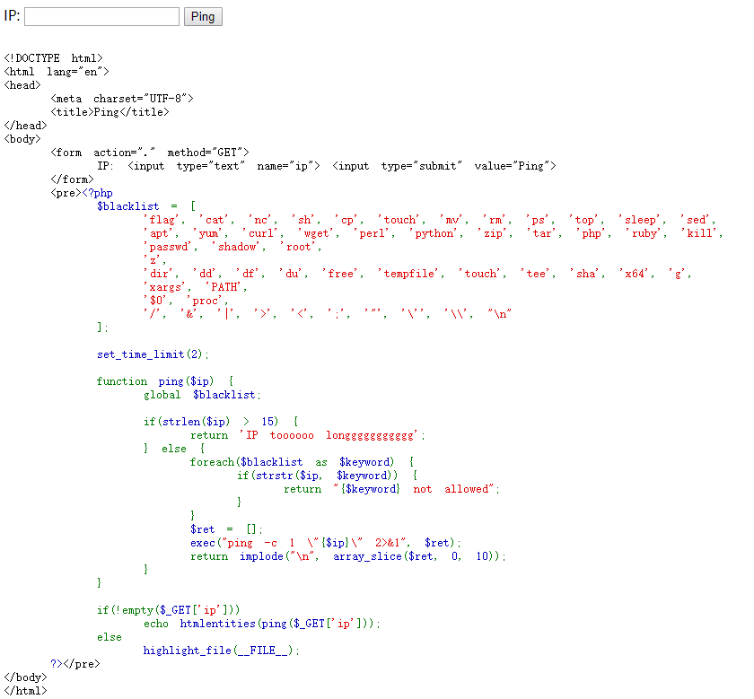
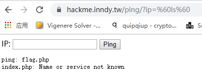
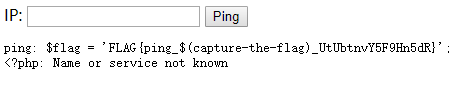

[src = hackme] ping
题目描述
Can you ping 127.0.0.1?
WP
点击题目，跳转到题目页面。网页如下：

可以看到页面进行了黑名单过滤，常用的|管道符，cat，cp等命令都被过滤掉了，所以无法进行简单的命令执行，如输入“|ls”会显示：“| not allowed”；哪如何绕过黑名单哪？我们解释一下exec函数：
exec() —执行外部程序
1 | string exec ( string $command [, array &$output [, int &$return_var ]] ) |
这时如果对Linux基本命令熟悉的话会想到反引号“`”，bash命令中的双引号(“)，单引号(‘)，反引号(`)区别:
反引号(``): 反引号作用相当于命令替换，Bash处理时引用的部分会被优先执行，执行结果被替换到外层的命令行文本中；反引号可以嵌套使用，但是嵌套时内部的反引号必须进行转义处理。
单引号(‘’): 在命令行中，单引号引用的部分的所有特殊字符均按照普通字符解释
双引号(“”): 双引号引用的部分，仅解释美元符号$、转义符\ 和反引号`，解释后的文本仅按照普通文字处理，即同单引号的处理。
要想得到flag，我们需要先看一下当前目录下有没有flag相关文件，可以用ls命令（本题并没有过滤ls），所以输入`ls`，页面输出：

可以看到目录下有flag.php，index.php两个文件，flag.php里面应该包含了flag。常见的思路是使用cat命令查看该文件的内容，但是黑名单过滤了cat命令。那就需要考虑linux系统还有哪些可以查看文件内容，但又没有在黑名单的命令可用。其中sort就是其中一个。sort将文件的每一行作为一个单位，相互比较，比较原则是从首字符向后，依次按ASCII码值进行比较，最后将他们按升序输出。其他可以用来显示文件内容对命令包括：
tac命令 : 反序输出文件的内容，文件的最后一行显示在第一行
head命令: 用于显示文件的开头的内容。在默认情况下，head命令显示文件的头10行内容。
tail命令: 用于显示文件的结尾的内容。在默认情况下，taild命令显示文件的后10行内容。
more命令： 按页来查看文件的内容。但是sort命令后面需要跟文件名，但flag被过滤，所以`sort flag.php`行不通。
哪这么办哪？可以想到Linux系统的通配符。输入`sort ????????`，可以得到flag。

或者`tail f*`也可以得到flag。
[知识点]
本题考察了命令执行（Commnd Execution）漏洞的利用，主要考察了命令执行的基本原理，如何绕过过滤。其中一些常用的Linux系统命令的使用要熟悉，比如ls，cat，sort等。